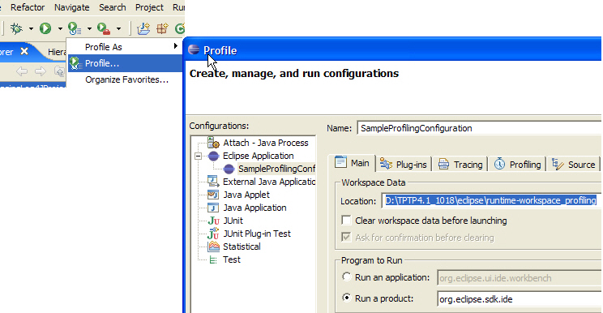
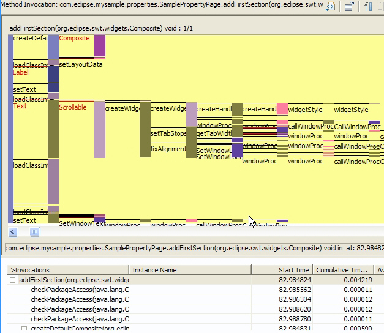
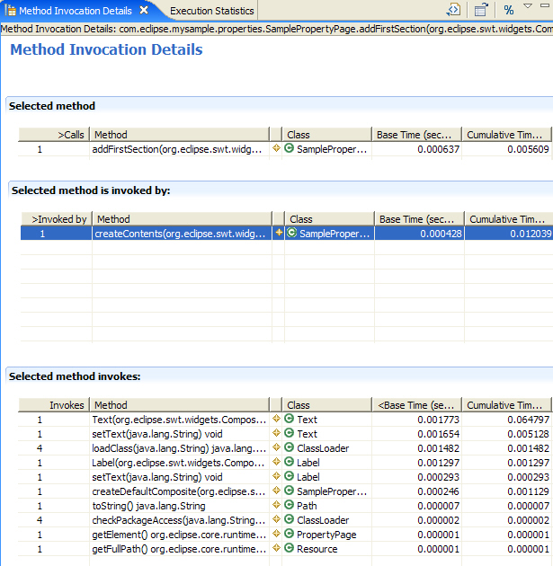
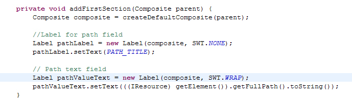
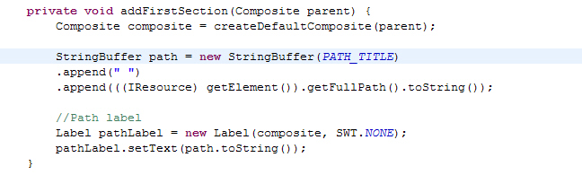

Copyright © 2001 International Business Machines Corp.
TPTP Profiling tool
Summary
If you are looking for a tool that can profile Eclipse plug-ins, local Java™
applications or complex applications running on multiple host and
different platforms, the TPTP Profiling tool is something you can try.
The tool is tightly integrated with Eclipse, allowing profiling of
applications running from within Eclipse. This article demonstrates how
to use the TPTP Profiling tool to profile
an
Eclipse plug-in for identifying execution related hot spots. It shows
how to start the profiling session, use the various TPTP
views to analyze the data, identify methods with high execution time
then jump to the source code to review their implementation.
By Valentina Popescu, IBM
October 28, 2005
Profiling an application using TPTP Profiling Tool
The Eclipse Test & Performance Tools Platform (TPTP) Project
offers a profiling tool for identifying and isolating performance
problems such
as performance bottlenecks, object leaks and system resource limits.
The tool
targets applications of all levels of complexity, from simple
standalone Java™
applications to Eclipse plug-ins or complex enterprise
applications running
on multiple
machines and on different platforms.
Being tightly integrated with the Eclipse project, the tool
is also easy to use and extend. That means that users can plug in their
preferred views to analyze the data, or can extend the data collection
metaphor
by implementing their own flavor of data collection agent.
This article provides an introduction to the TPTP
Profiling
tool. It shows how to profile an Eclipse plug-in using the Eclipse
workbench and
how to analyze this data using various statistical and graphical views.
Why profile an application?
In the current environment of short development cycles for
delivering a product, developers tend to focus more on the functional
aspects
of application execution, mostly via testing, debugging, and code
fixing.
However,
many problems do not easily surface until the application is running in
production
mode, 24 hours a day, 7 days a week and gets pushed to
limits
during some unexpected peak periods.
When developing complex applications, developers must do more than to
ensure
that the application output is correct. There are also performance
problems
that need to be identified and solved. Is the application leaking any
resources? Is the application using too much memory or is it too slow?
In practice, these problems cannot be discovered during a debugging
session. Before deployed and run in production mode, it is important to
use a Profiling tool to analyze application execution and identify
performance problems, such as execution
bottlenecks, object leaks, and system resource limitations.
When is the right time to profile an application?
There is no definitive answer to the question of when is the best time
to perform profiling
and code optimization. Some developers attack optimization as early as
possible, to lower the chances of creating slow code that cannot be
improved
later without great effort. Others leave it until the very end,
focusing first on getting the functionality in.
We’d recommend using a profiling tool relatively early in
your development cycle. This way, you can reduce costs and avoid
problems
during the final performance tests.
A best practice is to use an iterative development process
and profile your application during each development cycle, looking for
memory
leaks and other performance problems.
In the end, use common sense to decide when it is appropriate to follow
our recommendation: it doesn’t make sense to run a lot of performance
tests when you implement your simple standalone HelloWorld Java
application, but it is highly recommended to find time for
performance
analysis when the application is a complex multi-tier enterprise
application
running on multiple machines, possibly on different platforms.
Overview of the TPTP Profiling tool
The TPTP Profiling tool provides a powerful and easy-to-use user
interface for profiling an application and for analyzing the profiled
data.
A set of statistical views helps you identify performance hot
spots at the package, class, or method invocation level. The tool also
provides
a set of graphical views that gives a better understanding of the
application
execution, at the nodes, processes, threads, or method invocation
level.
The
tool can collect information at the instance or method invocation
level.
Being tightly integrated with Eclipse, the Profiling tool makes
profiling an
application from the Eclipse workbench as easy as running or
debugging the same application.
Profiling a remote or local application with TPTP
The TPTP Profiling tool allows you to profile applications running
on the local host or residing on remote machines. The metaphor used to
profile remote
applications is identical to the one used when the application is
running
on the
local host or within the Eclipse workbench. The only difference is that
for
profiling remote applications or applications external to the Eclipse
workbench, the
Remote
Agent Controller (RAC) service needs to be installed first on the
machine where
the profiled application is executed.
Remote Agent Controller (RAC) architecture
Profiling applications on remote hosts is managed by the
Remote Agent Controller (RAC) service.
The RAC's deployment model is made up of
multiple development hosts that use the Eclipse workbench to interact
with applications
residing on different hosts on the network.
The Eclipse workbench sends all its profiling requests to
the RAC on the deployment host where the profiled
application
is running. It is on the deployment hosts that these requests are
authenticated
and routed to the target agent or service. Commands and data that are
generated
by the agents and services must also be routed to the RAC,
from where they are then transmitted back to the Eclipse workbench that
initiated
the profiling session.
RAC controls the collecting of profiled data using different
types of agents, such as the Java Profiling Agent that comes with TPTP.
A Java
Profiling Agent runs in a JVM process and receives notifications of JVM
events, based on the JVMPI (Java Virtual Machine Profiler Interface).
Note that the data collection framework is extensible so
that third parties can implement their own flavor of data collection
agent for any
other non-Java applications.
Installation
To be able to profile an application running on the local
host, you just need to copy the set of plug-ins packaged by TPTP.
For profiling applications running on remote hosts, you will
need to install the RAC service on the machine
where the
application resides. Note that the RAC service is
installed
separately from the TPTP plug-ins.
For installation details, go to http://eclipse.org/tptp/
and then select the TPTP Latest Downloads page. You will be presented
with the latest TPTP version
as well as the prerequisites to run the TPTP plug-ins. From this link
you can also
optionally install the RAC for profiling
applications on
remote hosts.
Profiling an Eclipse plug-in
This article exemplifies how to use the TPTP Profiling tool to profile
an
Eclipse plug-in. The plug-in used in this example is the ‘Plug-in with
a
property
page’ template plug-in provided by the Eclipse platform.
To generate this sample plug-in, go to File
> New… > Project >
Plug-in Project and then select the ‘Plug-in with a property
page’ option
on the
Template page. This template creates a standard plug-in directory that
adds a
Property Page option to any file type.
Use com.eclipse.mysample for
the plugin name.
In this article, we will focus on the set of profiling views that can
be
used
to identify the method with the highest execution time. This article
will not discuss the other
equally important views that can be used to find memory leaks or
memory-related
problems.
The first step is to run the Eclipse workbench in profiling mode by
selecting Profile… from the
Java perspective toolbar menu:

Figure
1 Profiling an Eclipse Application
This scenario proposes to analyze the
application execution so the next step is
to set the profiling options to collect method execution information.
The profiled
data will also be filtered to collect only classes defined by this
sample
plug-in.The profiling filters and options will
be set on the Profiling tab:
Figure
2 Profiling filters and options
Run this Eclipse workbench configuration
and on the runtime-workbench,
select any file, right-click, and then open the Properties
wizard:
Figure
3 Sample Property page
In the image above, notice the Sample Page generated by this sample
plug-in.
Select the page and then go back to the Eclipse application that
initiated
this
workbench instance, and analyze the data using the TPTP profiling views.
The Execution Statistics view is a good starting
point as it identifies the packages, classes, or methods
responsible for slow execution time. Open this view by selecting the
process from the Profiling Monitor view and
then select Open with > Execution Statistics
popup action:
Figure
4 Execution
Statistics View
As presented in Figure 4, the Execution
Statistics view shows statistics of different methods, sorted by
execution Base Time. The view can be customized
to display any type of statistical data, such as memory allocation, or
time
based-based statistics.
In this particular sample, the view is
sorted based on execution Base Time and identifies SamplePropertyPage.addFirstSection()as having the highest
execution time.
Next, drill
down to the method’s execution
details and analyze the invocation call stack.To view method execution
details,select Show Method Invocation from the
mehod's popup-up menu:

Figure
5 Method Invocation view
The Method Invocation view can be
used to identify performance issues as it displays method execution
patterns
and differences between invocations of the same method. By
using this view, you can graphically
visualize the method invocations, see who called this invocation in the
execution stack, or jump to the method source code.
The vertical rectangles represent method execution while the horizontal
lines mark the start of a method invocation in the execution call
stack. The lenght of the vertical rectangles is direct proportional
with the time spend in executing this method.
Note that some of the text has some line running through it. This is
usually happening when the method execution was so fast that the
size of the rectangle representing the execution is smaller then the
text size. Zoom into this area to get a better understanding of what
has
been executed.
The text marked in red in the Method
Invocation view represents object instantiations. In this scenario,
notice that
one instance of the following classes has been initialized: Composite,
Label,
Text and Scrollable. Also, looking at the execution pattern represented
by the
vertical rectangles, notice that the Control.createWidget() method has
the
highest execution time.
Once this is identified, the Method
Invocation Details view will be used to generated statistical
information for
the SamplePropertyPage.addFirstSection() method’s execution. Open the Method Invocation Details view by
selecting the addFirstSection() method in any of the profiling views,
and then select
Show Method Invocation Details
from the popup-up menu:

Figure
6 Method
Invocation Details view
In Figure 6, the Method
Invocation
Details view shows execution statistics for methods invoked by, or
invoking
SamplePropertyPage.addFirstSection(). Notice that
SamplePropertyPage.addFirstSection() invokes
org.eclipse.swt.widgets.Text(), this being the method with the
highest execution time in the call
stack.The next method with a high
execution time is ClassLoader.loadClassInternal(), which was called 4
times.
By using the profiling tool we had
identified that the most
expensive call in this execution stack is the instantiation of the Text
class. More, if
you look more closely at the Property page you see that the first
section displays only the resource path label although the Method
Invocation Details view
shows one Text component being instantiated.
Based on this information, you can now open the source code for
SamplePropertyPage.addFirstSection()
and analyze the method implementation. To open the source code for a
method or class, select the view,
and then select Open Source from
the view's pop-up menu:
Figure
7 Source Code
Figure 7 shows the source code in the Java perspective. As presented by
the profiling tool, the first section defines a read-only Text
instance, pathValueText, to
show the resource path. Also, notice that the code defines an extra
label, pathLabel, for the
field description.
Knowing that it is more expensive to
instantiate a Text object than a Label one,
the following improvements can be applied to the code :
1. Make the pathValueText a Label instead of a read-only Text.

2. Use only one label to define the first section and save one Label
instantiation.

Conclusion
The TPTP Profiling tool is a powerful, yet very easy-to-use tool. It
can help you find a wide range of performance problems, from
performance bottlenecks and object leaks to system resource limits. For
this specific
scenario, the profiling tool was used to analyze the application
execution and
identify possible performance hot spots.
The tool targets applications at any
level of complexity, from simple standalone Java applications to
complex enterprise applications running on multiple machines and on
different
platforms.
Being tightly integrated with Eclipse, the profiling
tool allows developers to test application performance early in the
development cycle. Using the profiling tool reduces risk early in the
development
cycle and avoids problems in the final performance tests.